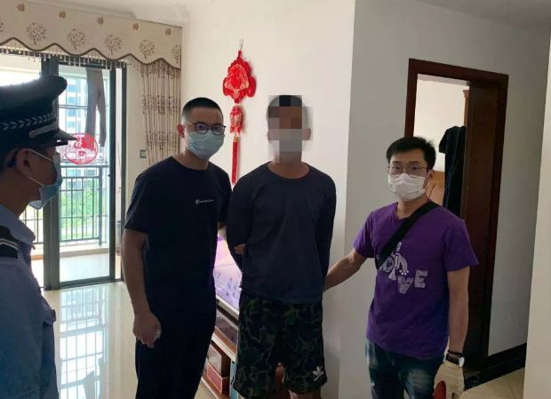

在人间丨妈妈在湖北当医生，我从美国寄口罩给她
原文链接 备份链接 凤凰新闻客户端 凤凰网在人间工作室出品 我家在湖北襄阳，妈妈是襄阳中心医院的医生。疫情发生以来，截至2月17日，襄阳新冠肺炎确诊病例累计1155例，在湖北省排名第七位。 我住在美国华盛顿。 1月21号，我给妈妈打电 …

本报记者 张家振 北京报道
江苏省宜兴市某企业采购员刘缘（化名）通过网络向一名异地供货商采购8万只口罩，不料在足额缴纳货款后，陷入了“财货两空”的境地。
宜兴市公安局经多日缜密侦查，“逆行”千里最终在2月14日将身居海南三亚的犯罪嫌疑人陈某（男，24岁）抓获。经审查，陈某如实交代，在明知无货源的情况下，仍以出售口罩名义，收取订货款24万元，随后提供虚假物流单号并拒不退还货款的犯罪事实。

（2月14日，江苏宜兴警方远赴海南三亚将涉嫌诈骗的陈某抓获归案。）
《中国经营报》记者辗转同刘缘取得了联系。据其介绍，公司为复工复产急需采购8万只一次性医用口罩，2月7日经人介绍最终和供货商陈某取得联系，但对方通过提供虚假视频和单号等方式搪塞，直到11日也没有发货。“后来才发现，对方根本就没有口罩货源，采购信息也被倒卖了多次。”刘缘告诉记者。
刘缘的遭遇并非个案。随着全国多地企业陆续迎来复工复产潮，作为复工必备“通行证”之一的口罩，成为一些人通过网络实施诈骗的诱饵。据了解，全国多地警方正加大对网购口罩诈骗案等相关违法行为的侦办力度，检察院和法院也从快审理。目前，江苏省南通市港闸区、安徽省宁国市等多地法院已对辖区内的“口罩诈骗案”依法作出判决。

求购信息被倒卖
对接采购事宜的人员在新疆乌鲁木齐，口罩生产厂家位于广东广州，收款账号和开户银行却显示在海南三亚，刘缘在采购口罩的过程中，陷入了对方早已布好的“陷阱”。
据宜兴市公安局“平安宜兴”发布的信息，刘缘所在的公司是宜兴市首批获准复工复产的企业之一，有员工上千人，为切实做好当前疫情防控工作，企业积极落实防控措施要求，为企业员工集中采购防护口罩。经人介绍，刘缘终于和一名异地供货商取得联系。
在双方谈妥采购数量后，采购员于2月7日按照约定通过公司账户先行打款给对方24万元，不久对方就发来了快递单号。但就在4天后的2月11日，当采购员查询快递时发现，快递单号突然被取消，当再次与对方联系时，对方承认未发货但以种种理由拒不退还货款。
据刘缘介绍，2月7日其在朋友介绍下与一位姬姓人员取得了联系，约定以3元每只的价格向其采购8万只口罩并支付了24万元货款，对方再三保证7日当天发货，结果一直到11日都没有发货。
刘缘表示，后来才了解到，姬姓人员身处新疆乌鲁木齐，其通过朋友玲玲，玲玲又从陈某处采购这批口罩。“其实他们都没有口罩货源，相当于我的求购信息被倒卖了，最终收款承诺发货的是陈某。在这一过程中，姬姓人员获利3.2万元，玲玲获利8000元，陈某实际收取的货款只有20万元。”刘缘告诉记者。

（陈某提供的虚假口罩产品合格证信息。）
其间，陈某向刘缘发来了口罩样品照片、产品合格证和生产企业营业执照、医疗器械生产企业许可证等信息。相关信息显示，陈某承诺发货的口罩生产厂家为广州市洛华医疗器械实业有限公司。
“陈某一直欺骗我们已经发货，并发来了虚假的顺丰快递单号。我们查询这个快递单号一直没有揽收信息，并且单号显示的运费和实际货物重量也不对应。”刘缘告诉记者。
2月10日，经刘缘再三催促，快递单号显示首批7万只口罩已被揽收，但运费只有18元。“据我们了解，这7万只口罩经顺丰快递发货的费用至少会有600元，不可能只有18元，而且到了当天晚上9点钟，我们再查询发现这个快递已经被取消了。”刘缘表示。
2月11日，在无法和陈某取得联系后，刘缘选择了向当地公安机关报警。为全力保障企业正常生产经营秩序，宜兴警方接警后立即抽调刑警、网安和高塍派出所等部门力量展开侦查，初步掌握了嫌疑人的行踪位于海南三亚。
2月13日，专案民警不惧当前疫情防控紧张形势，出征三亚开展线索核查。据宜兴市公安局相关负责人介绍，在海南警方的全力支持下，抽出了当地精干警力会同宜兴警方连夜展开侦查研判，摸准了嫌疑人陈某的具体位置，并于2月14日中午将其成功抓获。目前，陈某已被依法刑事拘留，宜兴警方正全力开展追赃挽损，案件正在进一步办理中。
诈骗资金用于网络赌博
同样遭到警方跨省追击的还有四川人陈某（男，26岁）。2月16日，四川省绵阳市三台县警方披露，2月14日，警方奔赴云南将发布虚假口罩信息实施诈骗，最终携款潜逃的嫌疑人陈某抓获，并于次日凌晨押解回三台。
经查，陈某于2020年1月底至2月10日间，陆续通过微信朋友圈发布售卖医用一次性口罩以及N90、N95口罩等信息，累计收到全国各地30余名受害人的口罩订单，数量达到44万余只，涉案金额104余万元。陈某在收到货款后并无口罩发货，遂携款潜逃至云南。
当地警方介绍，为了给潜逃赢得时间，陈某在成都购买了7000元的卫生纸，打包成46件快递包裹发往各地，并拍摄发货视频发给买家谎称已发货。经查，陈某共收到口罩货款104万元，大部分已被其用于网络赌博挥霍。
记者梳理发现，全国多地警方正从快查处涉及售卖三无口罩、借出售口罩诈骗等各类违法案件。例如，截至2月11日，广州市公安局共查处涉疫情案件226宗，抓获涉案人员146人，超八成涉及口罩诈骗。其中，查处购买口罩电信诈骗犯罪案件188宗，刑事拘留嫌疑人87人。
据广州市公安局刑警支队副支队长潘国良介绍，在口罩诈骗案件中，超过98%没有口罩实物，都是以低于市面价格售卖，收完钱就拉黑、电话删掉。只有个别是订大量货只交一小部分等。其中，最大诈骗额达105万元，诈骗分子把这些钱用于网络赌博。
各地公检法等部门也加大了“口罩诈骗案”的查处力度，对通过假借销售口罩进行诈骗的违法犯罪行为从严从快查处。例如，2月7日，江苏省南通市港闸区人民法院适用速裁程序，通过远程视频依法公开开庭审理了全国首起借疫情开展的“口罩诈骗案”，对被告人张正以诈骗罪判处有期徒刑一年六个月，并处罚金人民币1万元。
2月13日，安徽省宁国市人民法院公开开庭审理黄某某涉嫌网购口罩诈骗案，法院以诈骗罪判处黄某某有期徒刑二年八个月，并处罚金人民币3万元，且责令其退赔被害人季某某损失人民币3.56万元。该案从公安机关移送检察机关至庭审判决仅用5天。
优先保障防疫、复工需求
据了解，出于复工复产的防护需要，口罩正成为企业大批量采购的“抢手货”，制售假冒伪劣口罩、利用口罩等防护物资进行网络诈骗等也成为不法分子非法牟利的手段。
相关资料显示，距离武汉100余公里的仙桃市，有3000多家无纺布、口罩或防护服生产企业，有“中国非织造布产业名城”之称，曾一度成为国内最大的一次性口罩生产基地。

（仙洪高速仙桃南服务区临时设立的口罩转运场所。）
2月14日，为优先保障防疫和企业复工需求，湖北省仙桃市新型冠状病毒感染的肺炎疫情防控指挥部发布第7号令，进一步加强疫情防控期间口罩等防护物资生产销售管控，所有口罩、防护服等防护物资由市防控指挥部统一调配，任何企业不得私自交易，同时严查“三无”、假冒伪劣产品，对违规生产销售的企业和个人，从重从快从严惩处。
为稳定出厂价格，仙桃对口罩销售出厂价实行政府指导限价，一次性医用口罩价格不得高于1.20元/片，非医用口罩价格不得高于1.00元/片。对违反政府指导限价的行为予以严厉打击。
据仙桃一家口罩生产企业负责人介绍，一只口罩在平常的成本大概2毛钱，现在随着原材料和人工成本上涨，一只口罩的成本大概在6毛钱左右。“原材料翻了1倍，人工价格比平常上涨了四五倍，平常一个工人工资2000～3000块钱一个月，现在一天1000元甚至开到1200元还不一定能招到工人。”
记者在采访中了解到，为加速口罩生产和供应，当地在仙洪高速仙桃南服务区临时设立口罩转运场所，每天的交易额可以达到2亿元。“按照防疫规定，外地的大卡车现在不能进仙桃市区，口罩生产厂家先将货运到转运中心，外地的车辆再装车外运，现在主要是优先保障湖北省内防疫和复工储备需求，也有一些会销往外地。”上述仙桃口罩生产企业负责人表示。
（编辑：石英婧 校对：颜京宁）


推荐阅读

点击大图 |1晚获73万元打赏，1夜120万人“云蹦迪”，虚拟线上娱乐，真能“蹦”起来？

点击大图 |武汉病毒所回应“零号病人黄燕玲”

文章已于修改
原文链接 备份链接 凤凰新闻客户端 凤凰网在人间工作室出品 我家在湖北襄阳，妈妈是襄阳中心医院的医生。疫情发生以来，截至2月17日，襄阳新冠肺炎确诊病例累计1155例，在湖北省排名第七位。 我住在美国华盛顿。 1月21号，我给妈妈打电 …
原文链接 备份链接 “ - 疫 情 之 下 - 她们加班加点的多生产一片，老百姓就少一份因为口罩紧缺带来的恐慌；多生产一片，政府部门的抗疫情压力就会减轻一份；多生产一片，人与人之间就多了一个传递守护和关心的桥梁。 ” 1 作为一个只有79 …
原文链接 备份链接 澎湃新闻记者 邹娟 “终于可以解禁了！”2月16日，在上海自贸区上班的沈蔚明在朋友圈写下这句话，并配上一排笑脸表情。 沈蔚明是公司项目主管，自从2月3日从老家回到上海，沈蔚明已经在公司安排的人才公寓自我隔离了14天，2 …
原文链接 备份链接 封面报道之产业篇： 荆门：消毒剂企业难复工 | 神农架：10名患者现林区 | 十堰：“东风城”亟待开工 1月3日新冠肺炎确诊患者44例的时候，湖北仙桃市口罩厂的老板李力总觉得会有事发生。此前，他已经在网上看到非典在武汉 …
原文链接 备份链接 记者：刘睿欣 “ 颇为讽刺的是，一周前（2月4号），也就是被捕的前一天，黄智博还在微博发布手写信，支援奋战在抗疫一线的工作者，表示“我们同心协力打赢这场战疫，武汉加油！中国加油！”这也是黄智博迄今为止发布的最后一条微 …